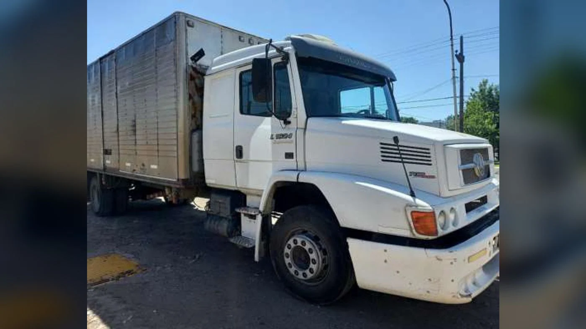
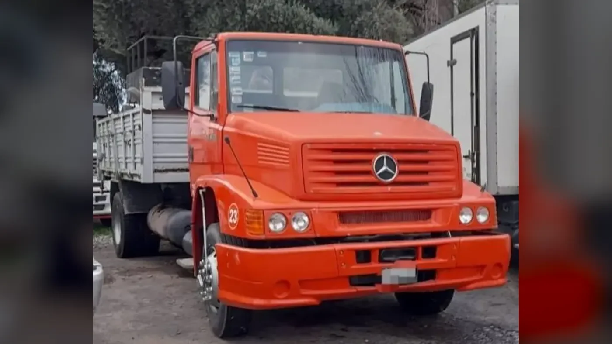

En la memoria del transporte argentino hay modelos que se recuerdan por una innovación puntual y otros que se ganaron un lugar por estar siempre presentes. El Mercedes-Benz L 1620 pertenece al segundo grupo. Durante los años noventa y la primera mitad de los 2000 trabajó como chasis con cabina, camión con caja, volcador, furgón, tanque, tractor y base para innumerables adaptaciones. Todavía hoy es posible encontrar unidades activas, muchas de ellas con más de una vida de trabajo encima.
Su fórmula no buscaba deslumbrar. Combinaba una cabina convencional de trompa corta, un motor diésel de seis cilindros conocido por los talleres, un chasis apto para numerosos carrozados y una mecánica relativamente directa. Esa mezcla ofrecía lo que un transportista necesitaba: capacidad razonable, disponibilidad de servicio y posibilidades reales de reparación lejos de una gran ciudad.
El significado de su nombre
En la nomenclatura tradicional de Mercedes-Benz, los primeros números orientaban sobre la categoría de peso y los dos últimos sobre la potencia aproximada. En términos simples, “16” ubicaba al modelo alrededor de las 16 toneladas de peso bruto y “20” señalaba una potencia cercana a los 200 caballos. No era una ecuación exacta para cada versión, pero explicaba rápidamente el lugar del L 1620 dentro de la gama.
La letra L identificaba al camión. Es importante no confundirlo con el OF 1620, que fue un chasis para ómnibus con motor delantero. Compartieron parte de la familia mecánica y una denominación parecida, pero fueron productos diferentes, con bastidores, distancias entre ejes, carrozados y aplicaciones que no deben mezclarse al buscar repuestos.
Su llegada a comienzos de los noventa
El L 1620 apareció en el mercado regional a comienzos de la década de 1990. Los registros oficiales argentinos incluyen unidades modelo 1993 y muestran que se comercializó durante muchos años en variantes como L 1620/45 y L 1620/51. Esos sufijos hacían referencia a configuraciones y distancias entre ejes, una diferencia decisiva para el largo carrozable, el radio de giro y la distribución de la carga.
La documentación registral también deja una enseñanza: según la variante y el año aparecen clasificaciones nacionales e importadas. Por eso resulta inexacto contar toda su historia como si cada L 1620 hubiese tenido un único origen. El modelo formó parte de la oferta argentina durante un período de integración productiva regional y sus unidades pueden presentar diferencias de procedencia y equipamiento.
En el mercado se ubicó como semipesado, con especial aptitud para reparto interurbano y media distancia. Era más capaz que un camión liviano, pero mantenía dimensiones y una complejidad adecuadas para trabajos donde un pesado de larga distancia podía resultar excesivo.

El OM 366: el corazón de la familia
El protagonista mecánico fue el Mercedes-Benz OM 366, un diésel de seis cilindros en línea y 5.958 cm³. Una investigación de seguridad de la Junta de Seguridad en el Transporte documentó un L 1620 modelo 1993 equipado con OM 366 A de 200 CV. La “A” indicaba sobrealimentación por turbo.
Con el paso de los años la configuración evolucionó. Folletos técnicos posteriores describen el OM 366 LA, donde la “L” agregaba la refrigeración del aire de admisión mediante intercooler. En versiones Euro I se informaron 204 CV y 640 Nm; una ficha Euro II de 2004 declaró 211 CV a 2.600 rpm y 660 Nm a 1.400 rpm. Esas cifras explican por qué dos camiones llamados 1620 pueden no compartir exactamente turbo, sistema de admisión, inyección o calibración.
Su mejor cualidad no estaba solamente en la potencia máxima. El par disponible a bajas vueltas ayudaba a mover carga sin exigir un régimen elevado, mientras que la construcción convencional facilitaba el diagnóstico para mecánicos acostumbrados a la familia OM. Con mantenimiento correcto, el conjunto podía acumular recorridos muy importantes.
Caja, diferencial y comportamiento
Las fichas de las versiones más recientes detallan una caja manual Mercedes-Benz G 85-6 de seis marchas sincronizadas, embrague monodisco seco de 350 milímetros y eje trasero con doble reducción. Las relaciones de diferencial podían variar de acuerdo con la aplicación: una relación más corta favorecía el arranque y la capacidad en pendientes; una más larga permitía viajar con menor régimen.
La dirección hidráulica, la suspensión delantera con elásticos parabólicos y la trasera con elásticos semielípticos y auxiliares respondían a una arquitectura probada. El frenado utilizaba tambores accionados por aire comprimido en circuitos independientes. No ofrecía la electrónica de un camión moderno, pero exigía una regulación correcta y componentes en buen estado para trabajar con seguridad.
Una ficha de 2004 indicaba 15.500 kilos de peso bruto total para el 4x2, 22.000 kilos con tercer eje adaptado y hasta 32.000 kilos de peso bruto total combinado. Son valores históricos de aquella configuración, no una autorización automática para cualquier unidad actual: el límite efectivo depende de la documentación, el carrozado, los ejes y la normativa vigente.
Un chasis para casi todos los trabajos
La adaptabilidad fue una de las claves de su éxito. Con caja cerealera o baranda volcable atendió al agro; con furgón hizo distribución; como volcador trabajó en construcción; con tanque transportó líquidos y combustibles; y como tractor llevó semirremolques en recorridos regionales. También recibió grúas, equipos de auxilio y carrocerías especiales.
Muchas unidades sumaron un tercer eje para distribuir mejor el peso. Esa reforma podía transformar la capacidad operativa, pero también agregaba suspensiones, válvulas, cañerías y puntos de desgaste. La calidad de la adaptación, la ubicación del eje y el reparto de carga influyen directamente en la estabilidad, el frenado y la vida del chasis.

Por qué se hizo tan popular
El L 1620 llegó cuando gran parte del transporte buscaba renovar unidades sin abandonar una mecánica conocida. Su motor pertenecía a una familia difundida, la red de atención era extensa y el mercado de repuestos creció alrededor de una flota numerosa. Para el dueño que hacía sus propios recorridos, esa previsibilidad era tan importante como la ficha técnica.
También era un camión fácil de configurar. El chasis admitía trabajos muy diferentes y la cabina convencional daba buen acceso al motor. Con el tiempo, la abundancia de piezas nuevas, alternativas y recuperadas permitió mantener en actividad unidades que ya habían pasado por varios propietarios.
La contracara es que hoy resulta difícil encontrar dos ejemplares exactamente iguales. Algunos cambiaron caja o diferencial para adaptar el régimen de ruta; otros recibieron motores reemplazados, terceros ejes, depósitos suplementarios, cabinas dormitorio o instalaciones eléctricas modificadas. Esa diversidad forma parte de su historia, pero obliga a identificar cada componente antes de comprar un repuesto.
Qué revisar en una unidad usada
La edad por sí sola no define el estado. Un L 1620 bien atendido puede conservar una base sólida, mientras que otro con años de sobrecarga puede acumular daños difíciles de ver. Antes de incorporarlo conviene hacer una inspección profesional y comprobar, como mínimo:
- Chasis: fisuras, soldaduras, corrosión, deformaciones y estado de travesaños y soportes.
- Motor: presión de aceite, humo, venteo, temperatura, pérdidas y respuesta bajo carga.
- Admisión y turbo: mangueras, abrazaderas, intercooler cuando corresponda y presencia de aceite excesivo.
- Transmisión: funcionamiento del embrague, entrada de marchas, ruidos de caja, cardanes, crucetas y diferencial.
- Frenos de aire: tiempo de carga, fugas, pulmones, válvulas, cintas, campanas y regulación.
- Suspensión y dirección: elásticos, bujes, pernos, gemelos, amortiguadores, extremos y juego de dirección.
- Reformas: documentación y ejecución del tercer eje, carrocería, enganche e instalaciones agregadas.
Un informe de la Junta de Seguridad en el Transporte sobre un L 1620 de 1993 recuerda la importancia de observar el conjunto completo: neumáticos, sistema de frenos, suspensión, carga y estado estructural. En un vehículo de trabajo con décadas de uso, la seguridad depende tanto del diseño original como de todo lo que ocurrió después.
Cómo pedir el repuesto correcto
Decir solamente “es para un 1620” no siempre alcanza. El año, el número de chasis, el código de motor y la medida de la pieza reducen errores. También conviene informar si la unidad tiene intercooler, qué caja equipa, qué relación o tipo de diferencial utiliza y si conserva la configuración original.
En frenos y suspensión es útil enviar fotografías y medidas. Para filtros, correas, mangueras, embrague, crucetas y componentes del motor, el número grabado en la pieza vieja puede ser decisivo. Cuando hubo reformas, hay que identificar el componente instalado y no asumir que corresponde al catálogo de fábrica del camión.
El legado del L 1620
Con el avance de las normas de emisiones y la llegada de cabinas y motores más modernos, el L 1620 fue cediendo su lugar en la gama. Los nuevos camiones ofrecieron más seguridad, confort, eficiencia y control electrónico. Sin embargo, el 1620 no desapareció de un día para otro: siguió trabajando en distancias regionales, tareas rurales, obras y servicios donde su robustez todavía tenía valor.
Su legado está en haber sido una herramienta accesible para transportistas, empresas familiares y grandes flotas. No fue un camión de museo durante su vida comercial; fue un vehículo construido para cargar, viajar y volver a trabajar al día siguiente. Esa continuidad explica por qué su silueta, con trompa corta y estrella central, sigue siendo reconocible en cualquier ruta argentina.
Conservar un L 1620 no significa ignorar su edad. Significa mantenerlo con piezas correctas, respetar su capacidad y entender qué versión se tiene delante. Para buscar componentes disponibles, podés visitar el catálogo de Zabala Repuestos o enviar los datos completos de la unidad desde la sección de cotización.